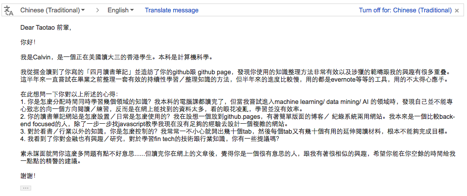

一封素不相识的来信
2016-05-09
写在前面
前几天无意间收到一封email，是一位小学弟写的，看到这封信，我仿佛看到大学时期的自己。从大一开始就没消停过，一开始捣鼓航模，还想趁军训期间和同学倒卖医用纱布，面膜，防嗮霜什么的；后来大二开始学习电路后，又开始捣鼓单片机，嵌入式，arduino，电路设计；大三后想出国又去整托福雅思，再后来发现没法拿到全额奖学金后；大四就开始乖乖找工作，学驾照，做毕业设计，最后大四下学期就来上海开始在第一家［也是现在的这家］公司实习。
回首大学时期，期间真的遇到过无数蛋疼的事情，也不断的在各个迷茫的漩涡中 back and forth。但是现在，在毕业2年后，我却觉得就像一句台词说的那样：当回首过去，才知道那些当时看起来的坎坎坷坷其实没也多大不了。
I always knew looking back on the tears would make me laugh.
看到这封信，我仿佛看到大学时期的自己。我本想认真的回复他，可是想想，也许现实中还有很多像他一样的学弟学妹，也正面临各种艰难的抉择和迷茫的漩涡。如果我把给他的回复放到博客上，只要其他的小学弟学妹也能看到，岂不最大化这封 email 的价值？［sorry，在金融业浸淫两年有余，做什么事都容易把价值最大化，投入产出比这些 f**king awesome factors 考虑进去］
- 这是那位学弟的来信［已征求学弟同意，允许发布到博客上］

2. The Key Problems
下面，是我根据这封 email 的内容和我的个人经验，总结的一些这位学弟面临的问题。到最后，我会一一再次回答学弟信里提到的几个问题。
- How should I schedule my time when I want to broaden my horizens?
- When I want to learning something new, there always be endless materials to read!
- How to build a web page to record your daily routines or growth plan?
- Can anyone give me some tips when learning fin-tech?
3. About Schedule Time
关于怎么合理安排时间，这是一个比较大的话题，但是在生活中能时时遇到，我觉得这个问题没有一个可以量化的答案，但是可以有一个准则：优先考虑最重要的事，尽量顾及不重要的事，给突发急事优先处理权。
举个例子，如果你想做一个技术型管理者，可以给自己制定了这样一个发展路线：
- 在自己擅长的技术方面，做到这个技术领域的高手，比如说 python，后台开发框架，分布式架构设计
这是你知识的深度；
- 在管理能力培养方面，多多看书，听相关讲座和分享，多跟老人交流分享
这是你知识的广度；
当你已经开始熟悉一个领域，并且想对其他方面有所了解的时候；即当你在某些方面有一些深度了解，又想扩宽自己的知识面的时候。你应该怎么安排你的时间呢？在我看来，或者以我的个人经历来看，我很推荐二八原则，即可以把 20% 的时间花在其他方面上，并且严格控制好限度，千万不可以为一昧想看其他方面的东西而影响当前一些工作和正常学习的进度。
4. About Endless Materials
这个话题是一个比较好玩的话题，不知道大家有没有这样一个感受，从小学到大学，成绩最好的那些同学，真的不是做作业做得最多的那些同学。同样的，一个公司里最能干的人，很少是那些加班加到天昏地暗的人。我一直对这种现象很好奇，知道最近几年开始慢慢带小孩儿［侄儿］，开始有去想如何教育孩子的经验之后，我才慢慢理解这种现象：在这种学习，工作的社会活动中，你投入的量越多，并不一定能带来质的提升。
简单的说，你所进行的学习，工作，需要你投入脑力和体力这两大核心要素，而在很多时候，我们发现一些同学去做了很多练习册，也发现一些同事无休止的加班，其实这些都是投入了大量体力的劳动，但是，其中的大部分人在这个体力活动的过程中，却很少去进行思考：
- 这道题为什么会错？
- 我在第一次接触这道题的时候是怎么去思考的？
- 下一次遇到这种题，切入点，思考点应该是什么？
有过带小孩儿经验的人都知道，很多小孩子都会有一种 粗心大意 的习惯，很多大人不以为然，每次都说 “那下次细心一点就好啦”。在我看来却不是这样的，如果你深究下去，你就会知道，小孩子之所以 粗心大意，大多都是因为想要早点做完作业，早点出去玩，早点看电视，你告诉他 “那下次细心一点就好啦” 无事无补。我的宝贝侄儿马上三年级了，也是有这个习惯，每次给他检查作业我都告诉他，做完一个大题，先把这个大题检查一次再做下一个大题，遇到不会的，可以先跳过。有时候小孩不听话，我就在他旁边守着他做作业，养成这个习惯。
好了，言归正传，之所以要扯上面这些，我是想强调一个概念：你找的资料越多，看得越多，并不一定能让你懂得越多。
所以，当你想学一个新事物的时候，面临那么多纷繁的资料，你怎么办？我觉得，如果你找了10份资料，那就简单看下，从其中先选出你觉得最好的2～3份资料，然后 completely delete 其他落选的资料，把你分配的 20% 时间全部花在选出来的这 2～3 份资料上面。
3. Words to share with you
- I always knew looking back on the tears would make me laugh.
- You are what you’ve done in the past, what you’re doing tells what you will be tomorrow.
- Be the top in your field.
- Keep 20/80 principle in your mind.
- Check the A,B,Z model of Hoffman.
- Something reasonable in your eyes is unbelievable to others.